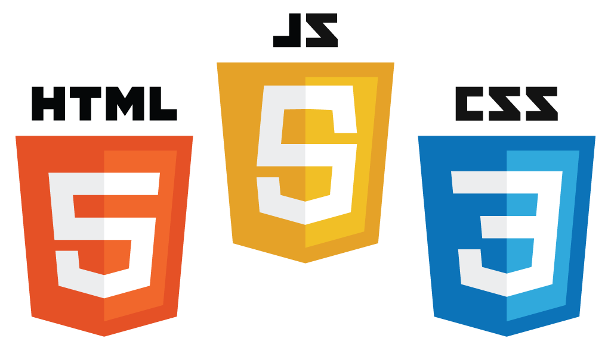

JavaScript / jQuery
AIS Value Added Forums

Agenda
JavaScript 24 minutes
- Introduction to JavaScript
- Fundamentals
- The Good Parts
- Additional JavaScript Resources
jQuery 28 minutes
- Overview of jQuery
- Fundamentals
- Additional jQuery Resources
Conclusion 6 minutes
Introduction
JavaScript is an interpreted language. (usually)
The most common use case for JavaScript code is within the Web browser.
The Ultimate Trio
A (Very) Brief History of JavaScript
TODO
Did you know? Top 10 languages on GitHub in 2013:
| Rank | Language | # Repositories Created |
|---|---|---|
| 1 | JavaScript | 264,131 |
| 2 | Ruby | 218,812 |
| 3 | Java | 157,618 |
| 4 | PHP | 114,384 |
| 5 | Python | 95,002 |
| 6 | C++ | 78,327 |
| 7 | C | 67,706 |
| 8 | Objective-C | 36,344 |
| 9 | C# | 32,170 |
| 10 | Shell | 28,561 |
Fundamentals
JavaScript's syntax is C-like. It is also weakly typed.
{% highlight js %}
if(hungry) { eat(); }
foo.bar = 'baz';
var time = new Date();
{% endhighlight %}
JavaScript employs function scoping, which is different than block scoping.
{% highlight js %}
var myFunc = function() {// New scope here.
var myVar = 'Hello, world.';
if(true) {// NO new scope here!
// This would be a redeclaration of myVar and will produce
// unexpected results, as well as errors/warnings for linters.
var myVar = 'Goodbye.';
}
};
{% endhighlight %}
JavaScript employs prototypal rather than classical inheritance.
There are therefore no classes in JavaScript, only objects.
So objects "inherit" from other objects.
The Good Parts
Functions are at the heart of what makes JavaScript great. The best way to get a feel for them is to jump in and try.
Look how easy it is to create objects in JavaScript:
{% highlight js %}
var han = {
firstName: 'Han',
lastName: 'Solo',
fullName: function() {
return this.firstName + ' ' + this.lastName;
},
occupation: 'Smuggler',
jedi: false,
favoriteThings: [
'Chewy',
'Leia',
'Millenium Falcon'
]
};
{% endhighlight %}
Arrays have a nice literal syntax, too:
As do regular expressions:
Additional JavaScript Resources
And now, on to jQuery...